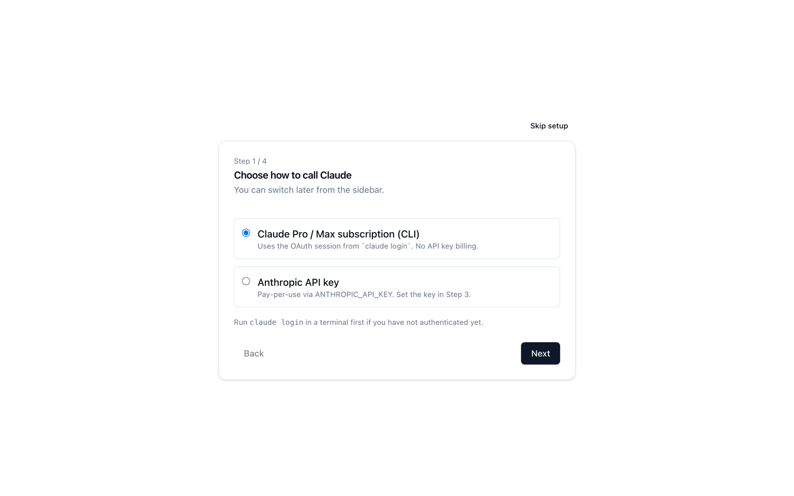
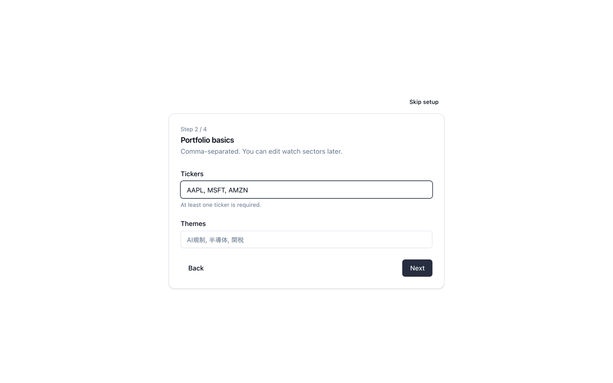
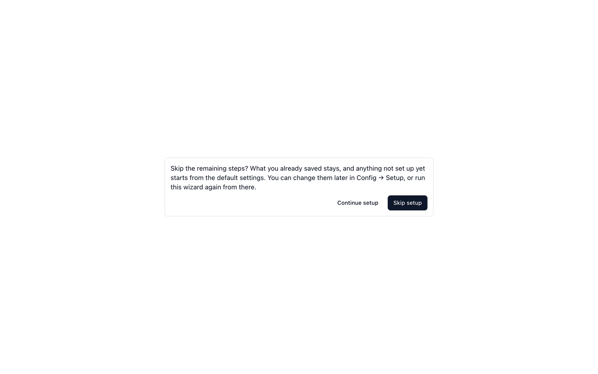

インストールと初回セットアップ
リポジトリを clone しなくても、npx brief-lens の 1 行で Web UI を起動できます。初回はデータの保存場所と Python の実行環境を自動で用意し、ブラウザでセットアップウィザードを開きます。
事前に用意するもの
| 必要なもの | 理由 | 入れ方 |
|---|---|---|
| Node.js 18 以上 | ランチャーと Web UI を動かす | nodejs.org |
| uv | バックエンド（Python）の実行環境を作る | brew install uv など |
| Claude Code CLI（ログイン済み） | Claude の呼び出しはすべて CLI を通る | npm install -g @anthropic-ai/claude-code のあと、claude を一度起動してログイン |
| 有料の Claude プラン（Pro / Max） | アプリは CLI のログインセッションを使う。無料プランでは動かない | — |
| macOS または Linux | ランチャーとバックエンドのスクリプトが POSIX 環境を前提にしている | — |
足りないものがあると、ランチャーはディスクに何も書かずに、不足している項目とインストール方法を一覧にして終了します。
起動する
npx brief-lens初回は次の順に進みます。
- 事前チェック — Node.js、
uv、claudeがそろっているかを確かめます。 - データの保存場所を作る —
~/.brief-lens/を作り、設定ファイルconfig/briefing.jsonをテンプレートからコピーし、セッショントークン（パーミッション 0600）を生成します。 - Python 環境を作る —
~/.brief-lens/runtime/venvに依存パッケージを入れます。uv のキャッシュが空だと数分かかります。2 回目以降は、新しいバージョンで依存が変わったときだけ入れ直します。 - サーバーを起動する — API（
127.0.0.1:8000）と Web UI（localhost:3000）を起動し、両方が応答したらブラウザを開きます。
止めるときは、ターミナルで Ctrl + C を押します。API と Web UI の両方が終了します。
起動オプション
| オプション | 内容 |
|---|---|
--port <n> | Web UI のポート（既定 3000） |
--api-port <n> | API のポート（既定 8000） |
--home <dir> | データの保存場所（既定は $BRIEF_LENS_HOME、なければ ~/.brief-lens） |
--no-browser | ブラウザを開かない（環境変数 CI があるときも開きません） |
-v, --version | バージョンを表示して終了 |
セットアップウィザード
初めてブラウザを開くと、4 ステップのセットアップウィザードが表示されます。各ステップで Next を押すと、入力した内容がその場で保存されます。

Step 1 — Claude の呼び出し方
- Claude Pro / Max subscription (CLI) —
claude loginのセッションを使います。API キーの従量課金はかかりません。通常はこちらを選びます。 - Anthropic API key —
ANTHROPIC_API_KEYを使う従量課金です。キーは Step 3 で入力します。
あとから Config → Auth で切り替えられます。
Step 2 — ポートフォリオの基本
Tickers（銘柄コード）と Themes（追いかけたいテーマ）をカンマ区切りで入力します。ウォッチするセクターや地政学リスクは、セットアップのあとで Watch Sectors / Geopolitical Risks から追加します。

Step 3 — 通知と認証情報
Discord と Notion に配信したい場合に、Bot トークンやデータベース ID を入力します。使わない項目は空欄のままで構いません。Step 1 で API モードを選んだ場合は、ここで ANTHROPIC_API_KEY も入力します。値は OS のキーチェーンに保存され、画面に再表示されることはありません。
Step 4 — 動作確認
ドライランを実行して、設定と認証情報に問題がないかを確かめます。Claude は呼び出さないので、利用枠は消費しません。終わったら Finish を押します。
セットアップを飛ばす
右上の Skip setup を押すと確認が表示され、もう一度 Skip setup を押すと残りのステップを飛ばして既定の設定で始めます。すでに保存したステップの内容は残ります。入力内容を保存している最中は押せません。

ウィザードは、あとから Config → Setup の Re-run setup wizard でやり直せます。やり直すときは現在の設定から始まり、セクターや地政学リスクの定義はそのまま残ります。
clone したリポジトリと併用する
npx で入れた brief-lens と、リポジトリを clone して bin/serve.sh で起動する環境は、データもキーチェーンも完全に別です。ただし既定のポートが同じなので、同時に動かすときはどちらかのポートを変えます。
npx brief-lens --port 3100 --api-port 8100アップデートとアンインストール
npx brief-lens@latest # 最新版で起動（Python の依存は変わったときだけ入れ直す）
rm -rf ~/.brief-lens # データ・実行環境・トークンをすべて削除
# キーチェーンの項目は保存した認証情報ごとに削除する（例）
security delete-generic-password -s brief-lens -a NOTION_API_KEY~/.brief-lens を消すと、ブリーフィングやジャーナルも消えます。
残したいものがあれば、先に Config → Export data で zip をダウンロードしてください。
npx 版でできないこと
- 毎朝の自動実行（launchd / cron、スリープ復帰後の再実行）は、今のところリポジトリを clone した環境だけで使えます。ソースから使う・毎日の運用を参照してください。
- Q&A Chat の Notion への追記は、Claude Code に
/notion-importスキルが入っている場合に動きます。入っていなくても、ローカルの Markdown への追記は行われます。